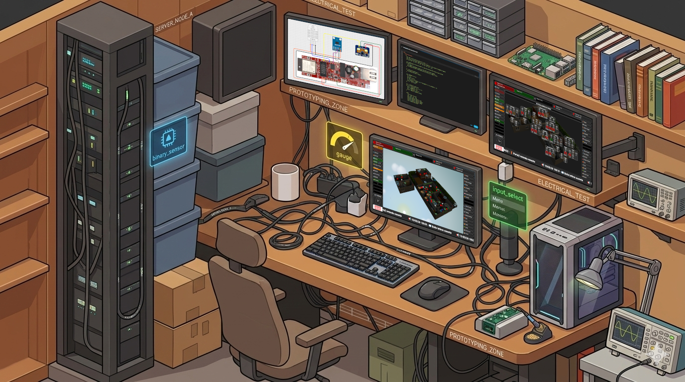

⚡
⚡ Expertise Électrique & Domotique
> Sécurité et Méthodologie : Respect strict des protocoles de consignation (travail exclusivement hors tension) et des règles de sécurité électrique.
> Diagnostique & Maintenance : Maîtrise des outils de mesure et interprétation de schémas électriques pour un dépannage logique.
> Modernisation & Rénovation : Adaptation et mise en conformité fonctionnelle d'installations existantes pour l'intégration de solutions domotiques.
> Câblage Soigné : Attention particulière portée au repérage et à l'esthétique du câblage.
█
📚
📚 Tutoriels & Articles
█
🤝
🤝 Aide à la personne
>
Domotique Sociale : Mon projet est d'allier technique et humain.
>
Accessibilité numérique pour les seniors.
>
Installation domotique simplifiée, locale et robuste.
>
Formation personnalisée pour lever la peur de l'informatique.
>
Un projet qui donne du sens à mon expertise technique et à mon vécu personnel.
█
🖥️
🖥️ Système & Réseau
>
Environnements Linux : Administration de systèmes Debian/Ubuntu (serveurs domestiques, Raspberry Pi). Maîtrise des opérations courantes et maintien en condition opérationnelle.
>
Réseau & Sécurité : Configuration de réseaux locaux, sécurisation des accès distants (ZeroTier).
>
Méthodologie de travail : Capacité à s'approprier rapidement des technologies complexes grâce à une veille constante et une approche méthodique assistée par l'IA.
>
Transmission de savoir : Rédaction de guides et de documentations techniques accessibles pour faciliter l'appropriation des outils par les utilisateurs finaux.
█
🎯
🎯 Vision & Accessibilité
>
Autodidacte dans l'âme.
>
Passionné par l'architecture des systèmes et la domotique, mon parcours est guidé par une conviction simple.
>
La technologie doit compenser les limites de l'environnement ou du corps.
>
Mes défis articulaires me permettent d'anticiper la plupart des besoins ergonomiques des seniors et des personnes en situation de handicap.
>
Mon approche est celle du Facilitateur.
█
📐
📐 Conception & Prototypage
>
Conception fonctionnelle : Réalisation de schémas et plans de montage pour visualiser et structurer des projets.
>
Prototypage Rapide : Développement de solutions électroniques sur mesure à base de microcontrôleurs (ESP) pour répondre à des besoins concrets.
>
Assistance à l'autonomie (PMR) : Recherche de solutions techniques, visant à simplifier le quotidien des personnes souffrant de troubles musculosquelettiques.
>
Approche expérimentale : Conception itérative basée sur l'expérimentation et l'optimisation continue des prototypes.
█
👤
👤 Résumé de Parcours
>
1992 : Études : Bac F2 Électronique.
>
2024-2026 : R&D Personnelle : Montée en compétences sur Home Assistant, Linux et prototypage, assistée par l'IA.
>
2020-2023 : Conseiller vendeur : Bricomarché.
>
2017-2019 : Électricien hors tension : Tirage de câbles et raccordements.
>
2010-2016 : ELS : Intermarché.
>
2009-2010 : Agent de production : Toyota.
>
2004 : Électricien hors tension : Ohara.
>
1992-2002 : ELS : Auchan.
█